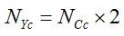
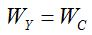
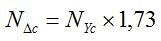
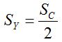
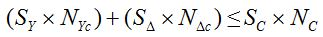

Перейти на главную страницу справочника.
Расчёт двухслойных совмещённых обмоток с параллельным соединением фаз №10.
| Прежде чем начинать расчёт совмещённых обмоток, выполните пересчёт обычной (старой) обмотки. 1. Соединение фаз в звезду. 2. Число параллельных ветвей а=1. (В совмещённой обмотке число параллельных ветвей будет а=1/1) 3. Пересчитать на двухслойную обмотку с шагом как у новой совмещённой. Пересчитать число витков в пазу при изменении среднего шага обмотки. |
Записываем данные обычной (старой) обмотки.
| Sс | Сечение провода старой обмотки. |
| Nс | Количество витков в пазу старой обмотки. |
| NСс | Количество витков в секции старой обмотки. |
| Sc×Nc | Заполнение паза в старой обмотке. |
| Wс | Количество витков в фазе старой обмотки. |
Расчёт витков в секциях основной и совмещённой обмотках.
- Расчёт витков в секции основной обмотки. NYс - количество витков в секции основной обмотки. NСс - количество витков в секции старой обмотки.

- Число витков в фазе основной обмотки равно числу витков фазе старой обмотки.

- Расчёт витков в секции совмещённой обмотки. NΔс - количество витков в секции совмещённой обмотки. NYс - количество витков в секции основной обмотки.

Расчёт сечения провода основной и совмещённой обмоток.
- Расчёт сечения провода в основной обмотке. SY - сечение провода основной обмотки. Sс - сечение провода старой обмотки.

- Расчёт сечения провода в совмещённой обмотке. SΔ - сечение провода совмещённой обмотки. SY - сечение провода основной обмотки.

- Проверить заполнение паза новой обмотки двигателя со старой обмоткой по формуле.
